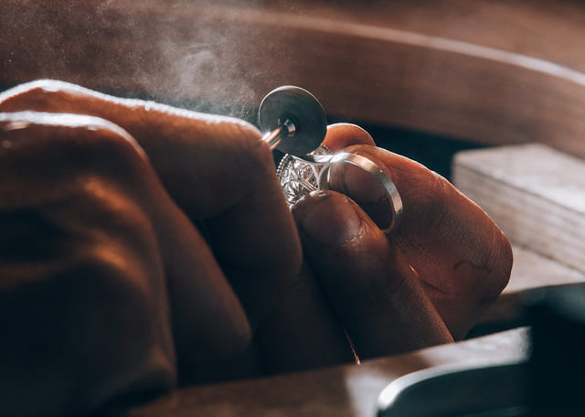

<section class="jewelry-artistry">
    <div class="container">

        <div class="jewelry-image-thumb">
            
        </div>

        <div class="jewelry-content">
            <h2 class="section-title">The Artistry Behind Handmade Jewelry</h2>

            <p class="section-description">
                Handmade Jewelry began as a passion project, inspired by the beauty of nature and the desire to create
                meaningful pieces. Each item is crafted with love, reflecting our commitment to sustainability and the
                unique story of its maker.
            </p>

            <ul class="priorities-list">
                <li class="priority-item">
                    <svg class="priority-icon" width="24" height="24">
                        <use href="../img/sprite.svg#leaf"></use>
                    </svg>
                    Inspired by Nature
                </li>

                <li class="priority-item">
                    <svg class="priority-icon" width="24" height="24">
                        <use href="../img/sprite.svg#donate-heart"></use>
                    </svg>
                    Handcrafted with Love
                </li>

                <li class="priority-item">
                    <svg class="priority-icon" width="24" height="24">
                        <use href="../img/sprite.svg#book"></use>
                    </svg>
                    Every Piece Tells a Story
                </li>
            </ul>
        </div>
    </div>
</section>